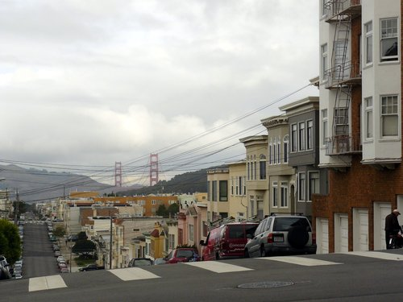
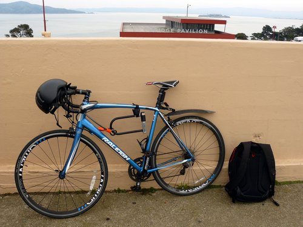
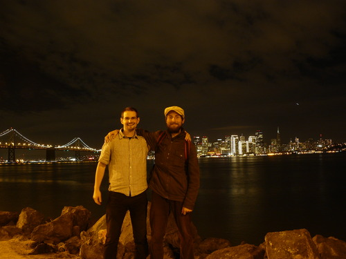
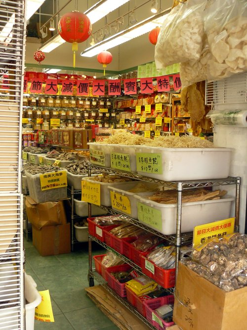
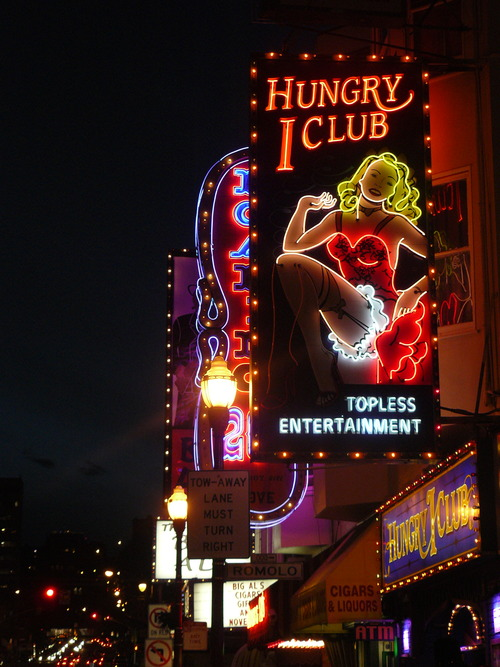

Epochální výlet do San Francisca
Tak. V pondělí, tedy za dva dny, letím domů. To to uteklo, co? Moc jsem vás nakonec těmi zážitky ze San Francisca nezásobil, co? No, nedá se nic dělat. Zkusím to shrnout do jednoho guláše.

Problém je, že když někam jedu na na tři dny, tak se pro to místo nadchnu, obejdu všechny památky, nafotím co se dá, v hlavě shromažďuji postřehy a mám chuť o tom psát nějaké články. Jenže když jsem někde měsíc nebo půl roku, tak si po nějaké době zvyknu a už se mi to vlastně tak hluboce rozebírat nechce. Dojmy jsou kouskovaté a rozmělněné mezi práci (kdysi na Erasmu mezi školu), už to není všechno tak intenzivní, člověk se věnuje běžnému životu a už mu ani jeho vlastní dny nepřipadají taková bomba, aby o tom hned musel někde referovat.


V San Franciscu je teď zima, což znamená, že dost často lije. Měli jsme tady i jednu srandovní bouřku, která vlastně ani bouřkou nebyla a jenom pršelo, ale zpanikařilo z toho celé město. Není to tady na déšť moc dělané. Jestli my se někde perem se něhem (zatímco ve Finsku to mají pošéfované), tak tady se perou s deštěm (zatímco u nás to máme pošéfované).
No, ale i přesto, že pršelo, že jsem na začátku na zajímavosti kašlal a i přesto, že tu je teď půl dne tma, tak si myslím, že jsem toho nakonec viděl docela docst. Nad očekávání.

Nu, za celý ten měsíc jsem teda nakonec viděl následující:
- Golden Gate Bridge (červený most)
- The Avenues, Golden Gate Park (moc fajn park), Lands End, Ocean Beach (Pacifik)
- Bay Bridge, Treasure Island (most přes bay do Oaklandu, výhledy na SF)
- Haight-Ashbury (centrála všech hipísáků světa)
- Twin Peaks (dva kopečky nad městem, odkud je výhled)
- China Town (čínská čtvrť)
- Russian Hill (Lombard St. - nejklikatější ulice), Nob Hill (jakože gotická katedrála), Telegraph Hill (Coit Tower - rozhledna), Cable Cars (takové ty slavné lanovky přes SF kopečky)
- Fisherman’s Wharf, Pier 39 (hrozně turistické nábřeží s volně žijícími lachtany)
- Mission District (hispánská čtvrť)
- Castro District (duhová gay čtvrť)
- North Beach a místa kde vznikala Beat Generation
- Sausalito (městečko v zátoce za červeným mostem)
- San Mateo trochu, San Jose
- Mt. Diablo trochu
Lombard St. ve skutečnosti nejklikatější není, to je nějaká jiná ulice, ale tato je turistickou atrakcí, tak jsem tam šel se podívat. A je to dost vtipné, hlavně pozorovat ty turisty tam :-D


Neviděl jsem Alcatraz, protože se mi tam na začátku ještě nechtělo a když už se mi tam celkem i chtělo, tak už tam nebylo s kým jet. Samotný jsem se raději projel někam na kole.



Ještě toho spousta zbývá, takže kdybych se sem podíval zase, tak budu mít pořád co dělat. No a kdyby náhodou, tak je tu pořád ještě okolí SF, které jsem moc neprozkoumal - žádné sekvoje, žádné národní parky, žádné víno v Nappa, atd. Pršelo, nebylo moc s kým, nebo nebylo jak - zkusil jsem něco objet na kole, ale třeba půjčeným autem by to asi bylo lepší. A to jsme zase u toho, že nebylo moc s kým. Ve více lidech by to bylo asi trochu o něčem jiném. Než jsem se rozkoukal, odjela půlka zdejšího osazenstva domů a teď jsem tu dokonce už úplně sám.


San Francisco je pecka co se týče jídla. Chcete-li ochutnat jakoukoliv kuchyni na světě a chcete-li přitom být na jednom místě, jeďte sem. Zapomeňte na česká ušmudlaná asijská bistra. Tady neexistuje asijské bistro, protože Asie je přece velká - je tu vietnamská kuchyně, čínská, japonská, barmská, indická, … Je-libo etiopskou kuchyni? Čerstvé sushi, včera letadlem přepravené z Tokia? Brazilský steak house all inclusive? Živý krab? Smažená kreveta? Všechno se tu najde.


No, akorát že já žádné takové věci neznám a vůbec nic z toho neumím jíst :-D Neznám plody moře a přijdou mi divné, nevím co znamená polovina názvů jídel ve všech asijských kuchyních, mám tragickou slovní zásobu i v angličtině co se týče stravování, nemám rád jídla, které mají nohy a oči a tykadla, děsí mě všechny ty sladké nebo smažené americké pokrmy, nelibuji si v ostrých věcech, neumím jíst kraby, atd. Jsem rád, že se trochu najím hůlkama. Průzkumy neznámých kuchyň tudíž probíhaly sporadicky, spíše za dodání kuráže kolegy nebo přímo s instruktáží od druhých jak co jíst, jako třeba u toho sushi, které bylo teda výborné, ale sám bych netušil co si objednat nebo jak to požít :-) I tak jsem toho na můj vkus zažil nového dost, co se týče jídla. Ale už se fakt těším domů na nějaký kus řízku nebo guláš nebo i blbé těstoviny s něčím. Prostě obyčejné jídlo! :-) Mou jedinou záchranou tady byly indické nebo mexické pokrmy, v nichž jsem se ještě tak nějak trochu dokázal zorientovat.

Restaurace tady fungují dost zvláštně a trvalo mi, než jsem přišel na to, jak se s tím poprat. Pokud jsou totiž dobré, tak se tam prostě stojí fronty. Buď si uděláte rezervaci, nebo přijdete a stojíte, než se uvolní nějaký stůl a posadí vás tam. Můžete čekat třeba 20 minut, ale i dvě hodiny. Nikomu to moc nevadí a je to známka toho, že restaurace je dobrá. Ostatně fronty mají rádi všude - jak někde není fronta, tak to prostě není dobrý! Jo a ve všech barech a restauracích je tady zakázáno kouřit. To je teda super.

Všiml jsem si taky, že skejt je tu úplně normální dopravní prostředek, jezdí tady na něm hrozně moc lidí. Nevím, jestli je to jakože Amerika, nebo jestli je to tu tak oblíbené díky těm kopcům… ale jako - nikdy jsem na skejtu nejel, tak netuším třeba jak to brzdí. Dneska jsem sjížděl jeden hóódně prudký kopec na kole, pomaličku s brzdama a měl jsem co dělat, abych si neklovl do silnice přede mnou.


Stejně tak je tady úplně normální dopravní prostředek Tesla :-) Nebo Uber, tím to tady žije. A co se týče vozového parku, to je vůbec zajímavé. Za celou dobu jsem nejspíš neviděl jedinou škodovku, ale jinak se tu dá vidět od různých veteránů přes takové ty staré americké silniční koráby až po nějaká Lamborghini a Porsche úplně všechno. A hodně lidí tu má všelijaká SUV. Čím mohutnější auto, tím lepší. Stejně tak jsou mohutné autobusy, náklaďáky, apod. Naše evropské náklaďáky by tady vypadaly jako chudáčci i vedle poštovního auta.

Jo a jak jsem psal o tom, že jsou tu bezďáci a je jich tu plno, tak to je sice fakt, ale zjistil jsem, že je tu posílají z celé USA, protože tady prý neumrznou :-) No a taky tady lidi dělají různé charitativní akce a krmí je a dávají jim deky a tak - a to i ti hipsteři z práce, o kterých jsem myslel, že žijou v nějaké úplné bublině. Jako sice žijou v bublině, ale aspoň se o ty bezďáky trochu starají, no.




Co se týče Vánoc, tak ty přišly dost pozdě oproti českému říjnovému bláznovství. Tady je totiž Halloween a pak Thanksgiving, takže to Vánoce o dost zdrží. Po Thanksgiving (čtvrtek) je černý pátek, kdy jsou takové ty šílené slevy na všechno, a tím “oficiálně” startuje vánoční sezóna a lidi začnou zdobit stromky a domky a všechno kolem sebe. U nás žádné takové svátky nejsou, takže obchody se zdobí už na konci srpna. To mi tu fakt nechybělo. No a i tak, jak tady není ten sníh nebo zima a člověk nemá televizi s reklamama a nečte moc české zprávy, tak jsem vlastně od Vánoc takový dost izolovaný letos. Jako vidím ty stromky a ozdoby a v obchodech a restauracích hrajou vánoční písničky od koled po Franka Sinatru, ale nějak mě to prostě nenastartuje, když stejně vidím kolem sebe palmy a když se poštěstí, dá se venku chodit pořád i v košili. A ani když ty palmy obtočí žárovkama, tak mě to nenabudí. Asi jsem prostě kulturně svázán s trhy na Svoboďáku a turbomoštem, co naplat.
No a víc postřehů nemám. Viděl jsem v trolejbuse upozornění, že minimální mzda v San Franciscu je $11,05 za hodinu. Ale je dobrý to brát v kontextu města, které je jedno z nejdražších míst v USA (pozemky mají větší hodnoty než na Manhattanu).


Kdybyste někdy jeli do San Francisca, nebo kdybych sem jel zase já a chtěl si to připomenout, sepsal jsem si takový návod jak zůstat naživu, aneb “stay safe in SF”:
- ve dne
- být na pozoru v Civic District, kolem Market St. a v SoMa
- být o dost víc na pozoru v Tenderloin
- za tmy
- být o dost víc na pozoru v Civic District, kolem Market St. a v SoMa
- vůbec nechodit do Tenderloin a raději ani do 6th St.
- kdykoliv
- za žádných okolností se nepřibližovat k Bay View a Hunters Point nebo k West Oaklandu (což už teda není ani SF, ale pro jistotu)
Zatímco ty nejnebezpečnější místa byste navštívili omylem jen stěží, zbytek těch problematických míst je přímo v centru města. Třeba Civic Disctrict je prostě oblast, kde je radnice a univerzita a vládní budovy, ale holt to není zrovna dobrá adresa. Jdete kolem radnice, která vypadá jak kopie bílého domu nebo tak něčeho, a říkáte si, jak nejste v nějaké sluníčkové oblasti, ale pak se rozhlídnete pořádně a zjistíte, že teda moc nejste :-) Tenderloin je říše zla s divnými lidmi, štětkami, feťáky a bezďáky (omylem jsem tam párkrát zabloudil, takže vás nestřelí hned do hlavy - to platí asi spíš pro ten West Oakland - ale necítíte se tam prostě úplně příjemně), 6th St. je slum bezďáků, v Civic District jsou hlavně bezďáci a feťáci, tak to tam až tak nebezpečný není, jen je to divný.

Obecně hlavně bezďáci nejsou nijak nebezpeční, jen žebrají, spí na ulici a nejsou nijak agresivní. Market St. a SoMa jsou gentrifikované oblasti, kde se jich po zemi válejí spousty… je tam dost chudých lidí a zároveň tam mají kancly třeba Twitter nebo Heroku a bourají se tam celé bloky a staví se tam místo nich nové mrakodrapy. Není to tam nebezpečný, ale ulice tam voňavé nejsou.

V SF (a možná je to tak i v jiných US městech) je fakt silný koncept “distriktů”, tzn. nějakého území, které má specifický ráz, lidi, vlastnosti, atd. Distrikt je ohraničen nějakými ulicemi a dost často se to prostě změní na několika metrech - žádné pozvolné přechody. Je to fakt dost zvláštní. Platí to jak pro pohodový a turistický China Town, tak pro nebezpečný Tenderloin. Stačí ho obejít o ulici vedle a v podstatě vám nic nehrozí.

No, čím bych to zakončil? Když už jsem se tak rozepsal… Žádné moudro v rukávu nemám. Když se ohlédnu, říkám si, že to docela uteklo a že jsem to nakonec strávil pěkně, ten čas. Nad očekávání :-) A že nebýt toho počasí a následně i nedostatku parťáků, tak bych tomu celkově asi nic nevytknul. Musím se naučit lépe prozkoumávat jídlo, protože mi to moc nejde a zjistil jsem, že moje chutě prostě končí někde 10 cm za knedlíkem a že s tím ve světě asi moc neobstojím, takže bude lepší, když se trochu adaptuju a naučím se nejen jíst, ale i vychutnávat takové ty nožičky a mušličky a ryby a všelijak připravované maso po japonsku a po africku a kdo ví jak ještě. Ono když člověk zápasí i s blbou plackou a kusem prazvláštně připraveného kuřete, tak mu to taky trvá hodinu a nakonec z toho ještě znova vyhládne. Zlatý kolořízky v Ostravě v Levském!

SF jsem objevoval “od konce” a čím víc jsem se ke konci věnoval těm více nebo méně turistickým věcem a opouštěl jsem SoMa, abych viděl i ty pěkné věci, tím častěji jsem na SF koukal s otevřenými ústy a kouzlo některých míst jsem si opravdu zamiloval. Těším se, až se sem zase někdy vrátím!

No a taky věřím, že se Zuzejkem se mi pak povede vrátit se na tomto blogu k tomu předsevzetí, které jsme naznačili v úvodním příspěvku - pár fotek, trocha textu, hlavně ať to odsýpá a není z toho dvouhodinové psaní a pro čtenáře román na dlouhé toaletní chvíle. Doteď vlastně nevím, jestli jsem to neměl dávat spíš na svůj blog, když tohle měl být náš společný o tom, co zažíváme společně my dva. Hm.